전기공사기사 (2018-09-15 기출문제)
1과목: 전기응용 및 공사재료
1. 출력 P[㎾], 속도 N[rpm]인 3상 유도전동기의 토크[㎏·m]는?
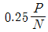
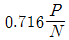
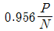
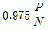
(정답률: 89%)

2. 리튬전지의 특징이 아닌 것은?
- 자기방전이 크다.
- 에너지 밀도가 높다.
- 기전력이 약 3V 정도로 높다.
- 동작온도범위가 넓고 장기간 사용이 가능하다.
(정답률: 66%)
3. 트랜지스터의 안정도가 제일 좋은 바이어스법은?
- 고정 바이어스
- 조합 바이어스
- 전압궤환 바이어스
- 전류궤환 바이어스
(정답률: 67%)
4. 지름 2m의 작업면의 중심 바로 위 1m의 높이에서 각 방향의 광도가 100cd 되는 광원 1개로 조명할 때의 조명률은 약 몇 %인가?
- 10
- 15
- 48
- 65
(정답률: 41%)
5. 전등효율이 14lm/W인 100W LED 전등의 구면광도는 약 몇 cd인가?
- 95
- 111
- 120
- 127
(정답률: 70%)
6. 금속이나 반도체에 전류를 흘리고 이것과 직각 방향으로 자계를 가하면 전류와 자계가 이루는 면에 직각 방향으로 기전력이 발생한다. 이러한 현상은?
- 홀(hall) 효과
- 핀치(pinch) 효과
- 제벡(seebeck) 효과
- 펠티에(peltier) 효과
(정답률: 79%)
7. 단상 유도전동기 중 기동 토크가 가장 큰 것은?
- 반발 기동형
- 분상 기동형
- 콘덴서 기동형
- 세이딩 코일형
(정답률: 86%)
8. 형태가 복잡하게 생긴 금속 제품을 균일하게 가열하는데 가장 적합한 가열방식은?
- 염욕로
- 흑연화로
- 카보런덤로
- 페로알로이로
(정답률: 78%)
9. 일정 전류를 통하는 도체의 온도상승 θ와 반지름 r의 관계는?
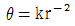
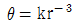
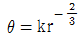
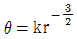
(정답률: 59%)
10. 열차의 설비에 의한 전력 소비량을 감소시키는 방법이 아닌 것은?
- 회생제동을 한다.
- 직병렬 제어를 한다.
- 기어비를 크게 한다.
- 차량의 중량을 경감한다.
(정답률: 70%)
11. 금속관(규격품) 1본의 길이는 약 몇 m인가?
- 4.44
- 3.66
- 3.56
- 3.3
(정답률: 65%)
12. 지선과 지선용 근가를 연결하는 금구는?
- 볼쇄클
- U볼트
- 지선롯드
- 지선밴드
(정답률: 65%)
13. 비포장 퓨즈의 종류가 아닌 것은?
- 실퓨즈
- 핀퓨즈
- 고리퓨즈
- 플러그퓨즈
(정답률: 71%)
14. 수전설비를 주차단장치의 구성으로 분류하는 방법이 아닌 것은?
- CB형
- PF-S형
- PF-CB형
- PF-PF형
(정답률: 75%)
15. 행거밴드란 무엇인가?
- 완금을 전주에 설치하는데 필요한 밴드
- 완금에 암타이를 고정시키기 위한 밴드
- 전주 자체에 변압기를 고정시키기 위한 밴드
- 전주에 COS 또는 LA를 고정시키기 위한 밴드
(정답률: 68%)
16. 백열전구의 앵커에 사용되는 재료는?
- 철
- 크롬
- 망간
- 몰리브덴
(정답률: 66%)
17. 저압의 전선로 및 인입선의 중성선 또는 접지측 전선을 애자의 빛깔에 의하여 식별하는 경우 어떤 빛깔의 애자를 사용하는가?
- 흑색
- 청색
- 녹색
- 백색
(정답률: 68%)
18. 방전등의 일종으로서 효율이 대단히 좋으며, 광색은 순황색이고 연기나 안개 속을 잘 투과하며 대비성이 좋은 것은?
- 수은등
- 형광등
- 나트륨등
- 요오드등
(정답률: 85%)
19. 금속덕트 공사에서 금속덕트의 설명으로 틀린 것은?(오류 신고가 접수된 문제입니다. 반드시 정답과 해설을 확인하시기 바랍니다.)
- 덕트 철판의 두께가 1.2mm 이상일 것
- 폭이 5㎝를 초과하는 철판으로 제작할 것
- 덕트의 바깥면만 산화방지를 위한 아연도금을 할 것
- 덕트의 안쪽면만 전선의 피복을 손상시키는 돌기가 없을 것
(정답률: 61%)
20. 보호계전기의 종류가 아닌 것은?
- ASS
- OVR
- SGR
- OCGR
(정답률: 85%)
2과목: 전력공학
21. 밸런서의 설치가 가장 필요한 배전방식은?
- 단상 2선식
- 단상 3선식
- 3상 3선식
- 3상 4선식
(정답률: 33%)
22. 전력용 피뢰기에서 직렬 갭의 주된 사용 목적은?
- 충격방전 개시전압을 높게 하기 위함
- 방전내량을 크게 하고 장시간 사용하여도 열화를 적게 하기 위함
- 상시는 누설전류를 방지하고 충격파 방전 종류 후에는 속류를 즉시 차단하기 위함
- 충격파가 침입할 때 대지에 흐르는 방전전류를 크게하여 제한전압을 낮게 하기 위함
(정답률: 34%)
23. 최소 동작 전류값 이상이면 일정한 시간에 동작하는 특성을 갖는 계전기는?
- 정한시 계전기
- 반한시 계전기
- 순한시 계전기
- 반한시성 정한시 계전기
(정답률: 36%)
24. 3상 송전계통에서 수전단 전압이 60000V, 전류가 200A, 선로의 저항이 9Ω, 리액턴스가 13Ω일 때, 송전단 전압과 전압강하율은 약 얼마인가? (단, 수전단 역률은 0.6이라고 한다.)
- 송전단 전압 : 65473V, 전압강하율 : 9.1%
- 송전단 전압 : 65473V, 전압강하율 : 8.1%
- 송전단 전압 : 82453V, 전압강하율 : 9.1%
- 송전단 전압 : 82453V, 전압강하율 : 8.1%
(정답률: 29%)
25. 화력발전소의 위치를 선정할 때 고려하지 않아도 되는 것은?
- 전력 수요지에 가까울 것
- 바람이 불지 않도록 산으로 둘러싸여 있을 것
- 값이 싸고 풍부한 용수와 냉각수를 얻을 수 있을 것
- 연료의 운반과 저장이 편리하며 지반이 견고할 것
(정답률: 34%)
26. 변전소 전압의 조정방법 중 선로전압강하 보상기(LDC)의 역할은?
- 승압기로 저하된 전압을 보상
- 분로 리액터로 전압상승을 억제
- 직렬 콘덴서로 선로 리액턴스를 보상
- 선로의 전압강하를 고려하여 기준 전압을 조정
(정답률: 31%)
27. 단도체 대신 같은 단면적의 복도체를 사용할 때의 설명으로 옳은 것은?
- 인덕턴스가 증가한다.
- 코로나 임계전압이 높아진다.
- 선로의 작용정전용량이 감소한다.
- 전선 표면의 전위경도를 증가시킨다.
(정답률: 35%)
28. 수차에 있어서 비속도가 높다는 의미는?
- 속도변동률이 높다는 것이다.
- 유수의 유속이 빠르다는 것이다.
- 수차의 실제의 회전수가 높다는 것이다.
- 유수에 대한 수차 러너의 상대속도가 빠르다는 것이다.
(정답률: 26%)
29. 출력 30000㎾h의 화력발전소에서 6000kcal/㎏의 석탄을 매시간 15톤의 비율로 사용하고 있다고 한다. 이 발전소의 종합효율은 약 몇 %인가?
- 28.7
- 31.7
- 33.7
- 36.7
(정답률: 25%)
30. 3상 단락고장을 대칭좌표법으로 해석을 할 경우 필요한 것은?
- 정상임피던스도
- 정상임피던스도 및 역상임피던스도
- 정상임피던스도 및 영상임피던스도
- 역상임피던스도 및 영상임피던스도
(정답률: 23%)
31. 송전계통에서 안정도 증진과 관계없는 것은?
- 차폐선의 채용
- 고속재폐로 방식의 채용
- 계통의 전달 리액턴스 감소
- 발전기 속응여자 방식의 채용
(정답률: 22%)
32. 정격전압 154kV, 1선의 유도리액턴스가 20Ω인 3상 3선식 송전선로에서 154kV, 100MVA 기준으로 환산한 이 선로의 %리액턴스는 약 몇 %인가?
- 1.4
- 2.2
- 4.2
- 8.4
(정답률: 26%)
33. 전력계통의 전압조정과 무관한 것은?
- 전력용콘덴서
- 자동전압조정기
- 발전기의 조속기
- 부하시 탭 조정장치
(정답률: 26%)
34. 저압 뱅킹 배전방식으로 운전 중 변압기 또는 선로사고에 의하여 뱅킹 내의 건전한 변압기의 일부 또는 전부가 연쇄적으로 회로로부터 차단되는 현상은?
- 아킹(Arcing)
- 댐핑(Dapping)
- 플리커(Flicker)
- 캐스케이딩(Cascading)
(정답률: 38%)
35. 중성점 직접 접지방식의 장점이 아닌 것은?
- 다른 접지방식에 비하여 개폐 이상전압이 낮다.
- 1선 지락 시 건전상의 대지전압이 거의 상승하지 않는다.
- 1선 지락전류가 작으므로 차단기가 처리해야 할 전류가 작다.
- 중성점 전압이 항상 0이므로 변압기의 가격과 중량을 줄일 수 있다.
(정답률: 28%)
36. 그림과 같이 일직선 배치로 완전 연가한 경우의 등가 선간 거리는?
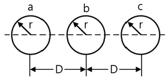
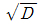
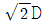
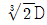
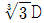
(정답률: 34%)
37. 전원이 양단에 있는 환상선로의 단락보호에 사용되는 계전기는?
- 방향거리 계전기
- 부족전압 계전기
- 선택접지 계전기
- 부족전류 계전기
(정답률: 31%)
38. 전력 퓨즈(Power Fuse)는 고압, 특고압기기의 주로 어떤 전류의 차단을 목적으로 설치하는가?
- 충전전류
- 부하전류
- 단락전류
- 영상전류
(정답률: 34%)
39. 3상 3선식 송전선로에서 선간전압을 3000V에서 5200V로 높일 때 전선이 같고 송전 손실률과 역률이 같다고 하면 송전전력[㎾]은 약 몇 배로 증가하는가?
- √3
- 3
- 5.4
- 6
(정답률: 27%)
40. 진공차단기의 특징에 적합하지 않은 것은?
- 화재위험이 거의 없다.
- 소형 경량이고 조작 기구가 간단하다.
- 동작 시 소음이 크지만 소호실의 보수가 거의 필요하지 않다.
- 차단시간이 짧고 차단성능이 회로 주파수의 영향을 받지 않는다.
(정답률: 29%)
3과목: 전기기기
41. 3상 유도전동기의 슬립 범위를 1~2로 하여 3선 중 2선의 접속을 바꾸어 제동하는 방법은?
- 회생제동
- 단상제동
- 역상제동
- 직류제동
(정답률: 37%)
42. 극수가 4극이고 전기자권선이 단중 중권인 직류발전기의 전기자전류가 40A이면 전기자권선의 각 병렬회로에 흐르는 전류[A]는?
- 4
- 6
- 8
- 10
(정답률: 33%)
43. 다음 그림은 어떤 전동기의 1차측 결선도인가?
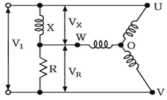
- 콘덴서 전동기
- 반발 유도전동기
- 모노사이클릭기동전동기
- 반발기동 단상 유도전동기
(정답률: 27%)
44. 누설변압기의 설명 중 틀린 것은?(오류 신고가 접수된 문제입니다. 반드시 정답과 해설을 확인하시기 바랍니다.)
- 2차 전류가 증가하면 누설자속이 증가한다.
- 리액턴스가 크기 때문에 전압변동률이 크다.
- 2차 전류가 증가하면 2차 전압강하가 증가한다.
- 누설자속이 증가하면 주자속은 증가하여 2차 유도기전력이 증가한다.
(정답률: 26%)
45. 직류기에 있어서 불꽃 없는 정류를 얻는데 가장 유효한 방법은?
- 보극과 보상권선
- 보극과 탄소브러시
- 탄소브러시와 보상권선
- 자기포화와 브러시의 이동
(정답률: 23%)
46. 3상 유도전동기의 2차 효율을 나타내는 것은? (단, 동기속도는 Ns, 회전수는 N이다.)
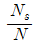
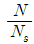
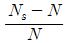
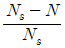
(정답률: 22%)
47. 직류발전기의 단자전압을 조정하려면 어느 것을 조정하여야 하는가?
- 기동저항
- 계자저항
- 방전저항
- 전기자저항
(정답률: 30%)
48. 톰슨형 단상 반발전동기의 설명 중 틀린 것은?
- 동기속도 이상으로 회전할 수 없다.
- 운전 중 정류자를 모두 단락하면 단상유도전동기가 된다.
- 회전방향을 바꾸려면 브러시를 반대방향으로 이동시킨다.
- 브러시의 위치조정으로 기동토크는 전부하 토크의 약 400~500% 정도가 된다.
(정답률: 19%)
49. 차동 복권발전기를 분권발전기로 하려면 어떻게 하여야 하는가?
- 분권계자를 단락시킨다.
- 직권계자를 단락시킨다.
- 분권계자를 단선시킨다.
- 직권계자를 단선시킨다.
(정답률: 31%)
50. 3상 유도전동기의 회전자 입력에 P2, 슬립이 s일 때 2차 동손을 나타내는 식은?
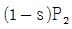
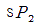
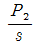
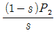
(정답률: 29%)
51. 기동토크가 가장 큰 직류전동기는?
- 직권전동기
- 분권전동기
- 복권전동기
- 타여자전동기
(정답률: 36%)
52. 60Hz, 6300/210V, 15kVA의 단상변압기에 있어서 임피던스 전압은 185V, 임피던스 와트는 250W이다. 이 변압기를 5kVA, 지상 역률 0.8의 부하를 건 상태에서의 전압변동률은 약 몇 %인가?
- 0.89
- 0.93
- 0.95
- 0.80
(정답률: 14%)
53. 변압기의 권수비 a＝6600/220, 철심의 단면적 0.02m2, 최대 자속밀도 1.2Wb/m2일 때 1차 유도기전력은 약 몇 V인가? (단, 주파수는 60Hz이다.)
- 1407
- 3521
- 42198
- 49814
(정답률: 28%)
54. 동기발전기를 회전계자형으로 사용하는 이유 중 틀린 것은?
- 기전력의 파형을 개선한다.
- 계자극은 기계적으로 튼튼하게 만들기 쉽다.
- 전기자권선은 전압이 높고 결선이 복잡하다.
- 계자회로는 직류의 저압회로이며, 소요전력이 적다.
(정답률: 23%)
55. 변압기의 습기를 제거하여 절연을 향상시키는 건조법이 아닌 것은?
- 열풍법
- 단락법
- 진공법
- 건식법
(정답률: 19%)
56. 6극, 30㎾, 380V, 60Hz의 정격을 가진 Y결선 3상 유도전동기의 구속시험 결과 선간전압 50V, 선전류 60A, 3상 입력 2.5㎾이고 또 단자간의 직류 저항은 0.18Ω이었다. 이 전동기를 정격전압으로 기동하는 경우 기동 토크는 약 몇 ㎏·m인가?
- 72
- 117
- 702
- 1149
(정답률: 9%)
57. △결선 변압기의 1대가 고장으로 V결선으로 할 때 공급전력은 고장 전 전력에 대하여 몇 %인가?
- 86.6
- 75
- 66.7
- 57.7
(정답률: 31%)
58. 전동기 제어에 많이 사용되는 인버터를 입력 전원의 형태로 구분한 것은?
- 구형파, PWM 인버터
- 전압원, 전류원 인버터
- 전압원, 사인파 PWM 인버터
- 히스테리시스, 공간벡터 인버터
(정답률: 22%)
59. 저항 부하의 단상 반파 정류회로에서 맥동률은 약 얼마인가?
- 0.48
- 1.11
- 1.21
- 1.41
(정답률: 22%)
60. 3상 동기발전기의 전기자권선을 2중 성형결선으로 했을 때 발전기의 용량[VA]은?
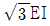
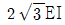
- 3EI
- 6EI
(정답률: 20%)
4과목: 회로이론 및 제어공학
61. 다음 회로는 스위치 K가 열린 상태에서 정상상태에 있었다. t＝0에서 스위치를 갑자기 닿았을 때 V(0＋) 및 i(0＋)는?
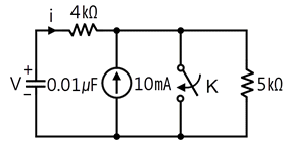
- 0V, 12.5㎃
- 50V, 0㎃
- 50V, 12.5㎃
- 50V, -12.5㎃
(정답률: 20%)
62.
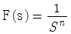
의 역 라플라스 변환은?- tn
- tn-1
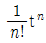
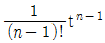
(정답률: 25%)
63. 다음과 같이 Y결선을 △결선으로 변환할 경우 R1의 임피던스는 몇 Ω인가?
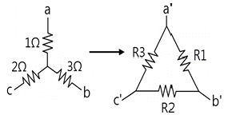
- 0.33
- 3.67
- 5.5
- 11
(정답률: 20%)
64. 60Hz, 120V 정격인 단상 유도전동기의 출력은 3HP이고 효율은 90%이며 역률은 80%이다. 역률을 100%로 개선하기 위한 병렬 콘덴서가 흡수하는 복소전력은 몇 VA인가? (단, 1HP＝746W이다.)
- -j1865
- -j2252
- -j2667
- -j3156
(정답률: 19%)
65. 2단자 임피던스의 허수부가 어떤 주파수에 관해서도 언제나 0이 되고, 실수부도 주파수에 무관하게 항상 일정하게 되는 회로는?
- 정저항 회로
- 정인덕턴스 회로
- 정임피던스 회로
- 정리액턴스 회로
(정답률: 29%)
66. 불평형 3상 회로에서 전압의 대칭분을 각각 I0, I1, I2전류의 대칭분을 각각 V0, V1, V2라 할 때 대칭분으로 표시 되는 복소전력은?(오류 신고가 접수된 문제입니다. 반드시 정답과 해설을 확인하시기 바랍니다.)
- V0I*1＋V1I*2＋V2I*0
- V0I*0＋V1I*1＋V2I*2
- 3V0I*1＋V1I*2＋V2I*0
- 3V0I*0＋V1I*1＋V2I*2
(정답률: 20%)
67. 그림에서 2Ω에 흐르는 전류 i는 몇 A인가?
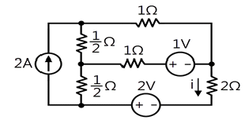
- 28/31
- 4/13
- 4/7
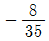
(정답률: 15%)
68. 처음 10초간은 100A의 전류를 흘리고 다음 20초간은 20A의 전류를 흘리는 전류의 실효값은 몇 A인가?
- 50
- 55
- 60
- 65
(정답률: 18%)
69. 3상 부하가 Δ결선되었을 때 n상에는 콘덕턴스 0.3℧, b상에는 콘덕턴스 0.3℧, c상은 유도 서셉턴스 0.3℧가 연결되어있다. 이 부하의 영상 어드미턴스[℧]는?
- 0.2 – j0.1
- 0.3 ＋ j0.3
- 0.6 – j0.3
- 0.6 ＋ j0.3
(정답률: 14%)
70. R＝4Ω, ωL＝3Ω의 직렬 RL회로에서
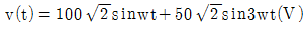
의 전압을 인가할 때 저항에서 소비되는 전력[W]은?- 1600
- 1703
- 2000
- 2128.75
(정답률: 19%)
71.
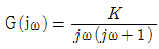
의 나이퀴스트 선도를 도시한 것은? (단, K ＞ 0이다.)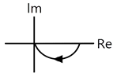
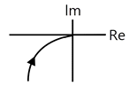
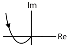
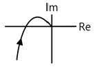
(정답률: 28%)
72.
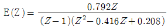
일 때, e*(t)의 최종값은?- 0
- １
- 25
- ∞
(정답률: 17%)
73. 물체의 위치, 방위, 각도 등의 기계적 변위량으로 임의의 목표값에 추종하는 제어장치는?
- 자동조정
- 서보기구
- 프로그램제어
- 프로세스제어
(정답률: 30%)
74.
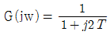
이고, T＝2초일 때 크기 G|jω|와 위상 ∠G(jω)는 각각 얼마인가?- 0.24, 76°
- 0.44, 36°
- 0.24, -76°
- 0.44, -36°
(정답률: 18%)
75.
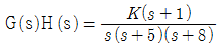
일 때 근궤적에서 점근선의 실수축과의 교차점은?- -6
- -5
- -4
- -1
(정답률: 27%)
76. 논리식
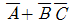
와 같은 논리식은?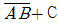
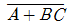
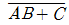
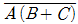
(정답률: 28%)
77. 그림과 같은 피드백제어의 전달함수를 구하면?
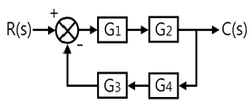
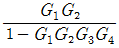
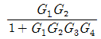
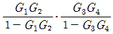
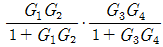
(정답률: 31%)
78. 근궤적에 관한 설명으로 틀린 것은?
- 근궤적은 허수축에 대칭이다.
- 근궤적은 K＝0일 때 극에서 출발하고 K＝∞일 때 영점에 도착한다.
- 실수축 위의 극과 영점을 더한 수가 홀수개가 되는 극 또는 영점에서 왼쪽의 실수축에 근궤적이 존재한다.
- 극위 수가 영점보다 많을 경우, K가 무한에 접근하면 근궤적은 점근선을 따라 무한원점으로 간다.
(정답률: 25%)
79. 두 개의 그림이 등가인 경우 A는?
(정답률: 23%)
80. 다음과 같은 차분 방정식으로 표시되는 불연속제가 있다. 이 계의 전달함수는?
(정답률: 24%)
5과목: 전기설비기술기준 및 판단기준
81. 사용전압 15kV 이하인 특고압 가공전선로의 중성선 다중접지식에 사용되는 접지선의 공칭단면적은 몇 mm2의 연동선 또는 이와 동등이상의 굵기로서 고장전류를 안전하게 통할 수 있는 것이어야 하는가? (단, 전로에 지락이 생긴 경우 2초 이내에 전로로부터 자동차단하는 장치를 하였다.)
- 2.5
- 6
- 8
- 16
(정답률: 20%)
82. 22kV의 특고압 가공전선로의 전선을 특고압 절연전선으로 시가지에 시설할 경우, 전선의 지표상의 높이는 최소 몇 m 이상인가?
- 8
- 10
- 12
- 14
(정답률: 25%)
83. 특고압용 변압기의 내부에 고장이 생겼을 경우에 자동차단장치 또는 경보장치를 하여야 하는 최소 뱅크용량은 몇 kVA인가?
- 1000
- 3000
- 5000
- 10000
(정답률: 18%)
84. 35kV 이하의 모선에 접속되는 전력용콘덴서에 울타리를 시설하는 경우에 울타리의 높이와 울타리로부터 충전부분까지의 거리의 합계는 최소 몇 m 이상이 되어야 하는가?
- 3
- 4
- 5
- 6
(정답률: 24%)
85. 지중 전선로를 관로식에 의하여 시설하는 경우 매설 깊이를 최소 몇 m 이상으로 하여야 하는가?
- 0.6
- 1
- 1.2
- 1.5
(정답률: 23%)
86. 사람이 상시 통행하는 터널 안의 배선을 애자사용공사에 의하여 시설하는 경우 설치 높이는 노면상 몇 m 이상이어야 하는가?
- 1.5
- 2.0
- 2.5
- 3.0
(정답률: 29%)
87. 전력 보안 가공통신선을 시설할 때 철도의 궤도를 횡단하는 경우에는 레일면상 몇 m 이상의 높이이어야 하는가?
- 5
- 5.5
- 6
- 6.5
(정답률: 34%)
88. 사무실 건물의 조명설비에 사용되는 백열전등 또는 방전등에 전기를 공급하는 옥내전로의 대지전압은 몇 V 이하인가?
- 250
- 300
- 350
- 400
(정답률: 34%)
89. 가요전선관 공사에 의한 저압 옥내배선으로 틀린 것은?
- 2종 금속제 가요전선관을 사용하였다.
- 전선으로 옥외용 비닐 절연전선을 사용하였다.
- 규격에 적당한 지름 4mm2의 단선을 사용하였다.
- 사람이 접촉할 우려가 없어서 제3종 접지공사를 하였다.
(정답률: 31%)
90. 고압 또는 특고압의 전로 중에서 기계 기구 및 전선을 보호하기 위하여 필요한 곳에 시설하는 것은?
- 단로기
- 리액터
- 전력용콘덴서
- 과전류차단기
(정답률: 36%)
91. 발전기·전동기·조상기·기타 회전기(회전 변류기 제외)의 절연내력 시험 시 시험전압은 권선과 대지 사이에 연속하여 몇 분간 가하여야 하는가?
- 10
- 15
- 20
- 30
(정답률: 36%)
92. 가공인입선 및 수용장소의 조영물의 옆면 등에 시설하는 전선으로서 그 수용장소의 인입구에 이르는 부분의 전선을 무엇이라고 하는가?
- 인입선
- 옥외배선
- 옥측배선
- 배전간선
(정답률: 32%)
93. 옥내에 시설하는 저압전선에 나전선을 사용할 수 있는 경우는?
- 금속관 공사에 의하여 시설
- 합성수지관 공사에 의하여 시설
- 라이팅덕트 공사에 의하여 시설
- 취급자 이외의 자가 쉽게 출입할 수 있는 장소에 시설
(정답률: 28%)
94. 교류식 전기철도는 그 단상부하에 의한 전압 불평형으로 전기사업용 발전기·조상기·변압기·기타의 기계기구에 장해가 생기지 아니하도록 시설하여야 한다. 전압불평형의 한도는?
- 전기사업자용 변전소에서 3% 이하일 것
- 전기사업자용 변전소에서 4% 이하일 것
- 교류식 전기철도 변전소의 수전점에서 3% 이하일 것
- 교류식 전기철도 변전소의 수전점에서 4% 이하일 것
(정답률: 26%)
95. 발전소, 변전소 또는 이에 준하는 곳의 최소 몇 V를 초과하는 전로에는 그의 보기 쉬운 곳에 상별 표시를 하여야 하는가?
- 7000
- 13200
- 22900
- 35000
(정답률: 23%)
96. 철주가 강관에 의하여 구성되는 사각형의 것일 때 갑종풍압하중을 계산하려 한다. 수직 투영면적 1m2에 대한 풍압하중은 몇 Pa를 기초하여 계산하는가?
- 588
- 882
- 1117
- 1255
(정답률: 21%)
97. 사용전압 60kV 이하의 특고압 가공전선로는 가공전화선로에 통신상의 장해를 방지하기 위하여 전화선로의 길이 12km마다 유도전류가 최대 몇 A를 넘지 않도록 시설하여야 하는가?
- 1
- 2
- 4
- 6
(정답률: 35%)
98. 지중전선로에서 관·암거·기타 지중전선을 넣은 방호장치의 금속제 부분 또는 금속제의 전선 접속함은 몇 종 접지공사를 하여야 하는가?(관련 규정 개정전 문제로 여기서는 기존 정답인 3번을 누르면 정답 처리됩니다. 자세한 내용은 해설을 참고하세요.)
- 제1종 접지공사
- 제2종 접지공사
- 제3종 접지공사
- 특별 제3종 접지공사
(정답률: 29%)
99. 지상에 설치한 380V용 저압 전동기의 금속제 외함에는 제 몇 종 접지공사를 하여야 하는가?(관련 규정 개정전 문제로 여기서는 기존 정답인 3번을 누르면 정답 처리됩니다. 자세한 내용은 해설을 참고하세요.)
- 제1종 접지공사
- 제2종 접지공사
- 제3종 접지공사
- 특별 제3종 접지공사
(정답률: 31%)
100. 고압 가공전선로를 가공케이블로 시설하는 경우 틀린 것은?
- 조가용선은 단면적 22mm2인 아연도철연선을 사용하였다.
- 조가용선 및 케이블의 피복에 사용하는 금속제에는 제3종 접지공사를 하였다.
- 케이블은 조가용선에 행거로 시설할 경우 그 행거의 간격을 60㎝로 시설하였다.
- 조가용선의 케이블에 접촉시켜 그 위에 쉽게 부식하지 아니하는 금속 테이프 등을 20㎝ 이하의 간격을 유지하며 나선상으로 감아 붙였다.
(정답률: 27%)
토크[㎏·m] = (전력[㎾] × 9550) ÷ (속도[rpm] × 2π × 3)
따라서, 보기 중에서 전력과 속도가 주어진 "" 가 정답이다.